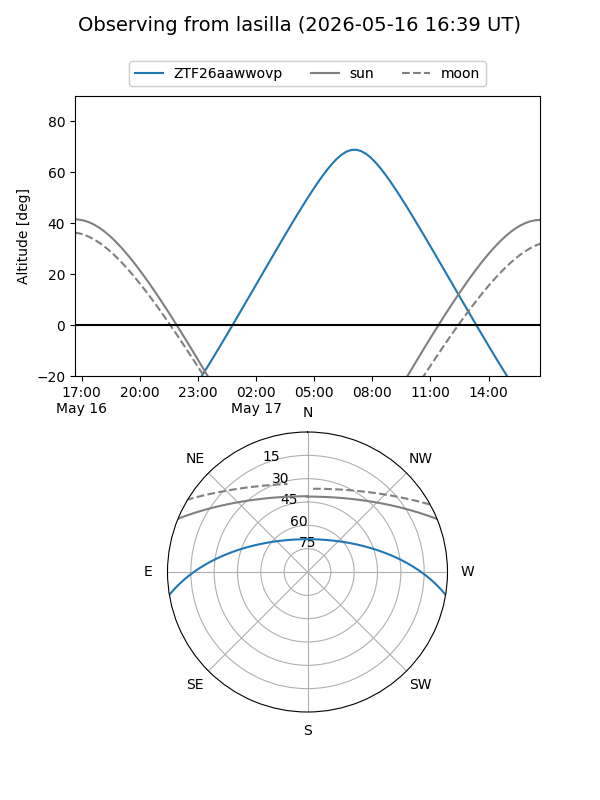
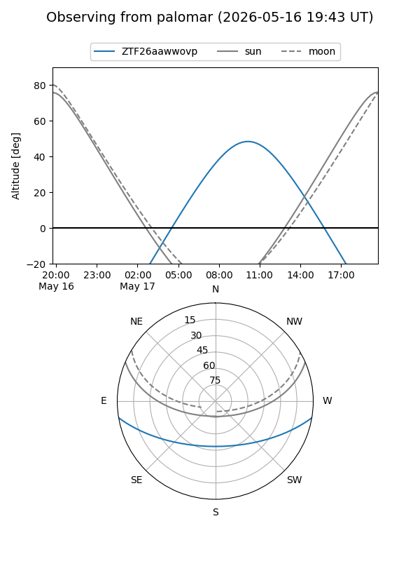

ZTF26aawwovp
Target ZTF26aawwovp at 2026-05-17 11:05
Aliases and brokers:
FINK: link
Lasair: link
ALeRCE: link
alt names
ZTF26aawwovp (ztf,fink_ztf)
Coordinates:
equatorial (ra, dec) = 270.0189,-8.17749
equatorial (HMS+DMS) = 18:00:04.54,-08:10:38.95
galactic (l, b) = (19.7014,+7.52274)
Flags:
Photometry:
last ztfg=17.74
2 ztfg detections
Lightcurve
Visibility


Additional plots